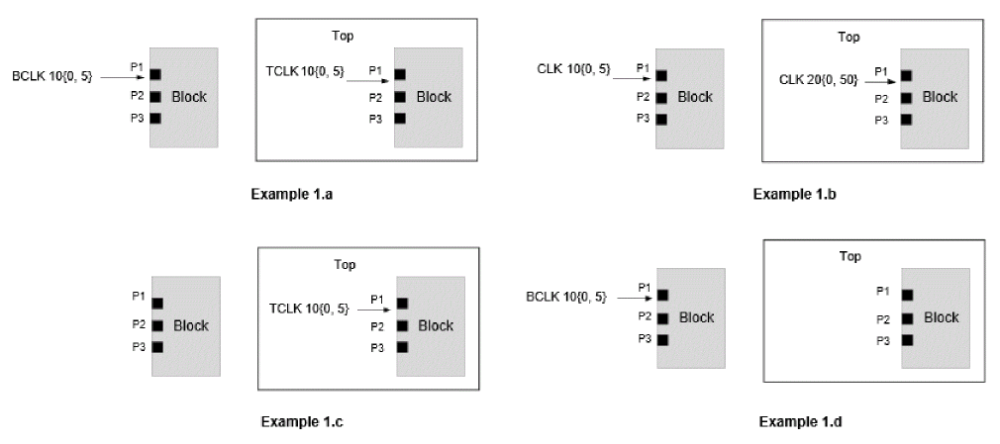
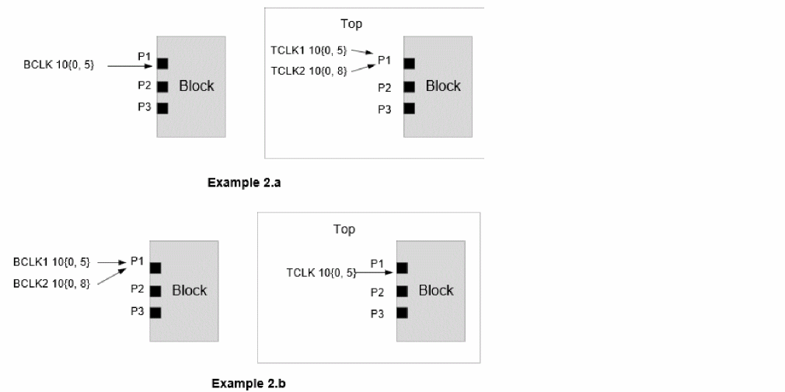
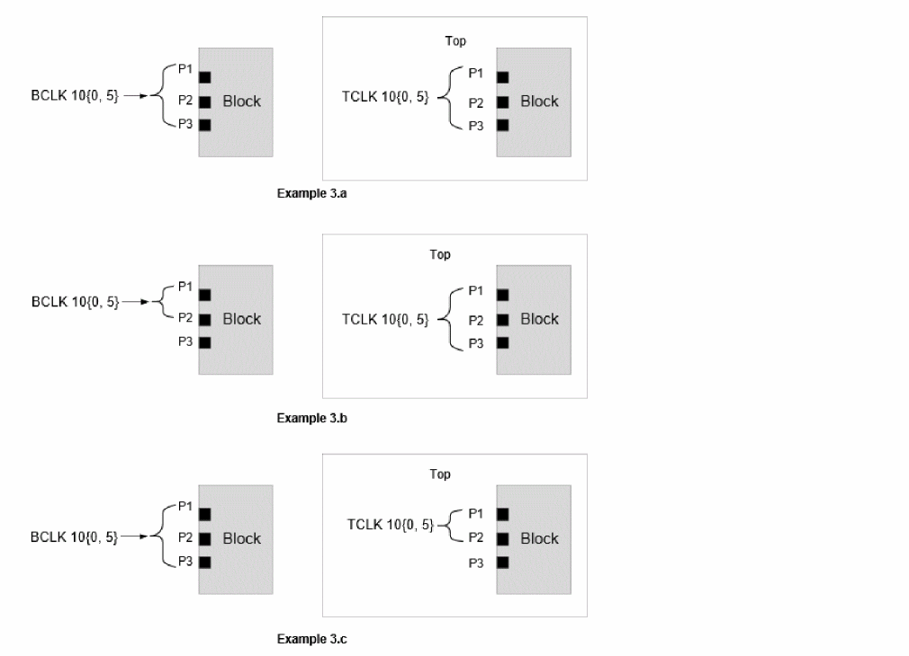
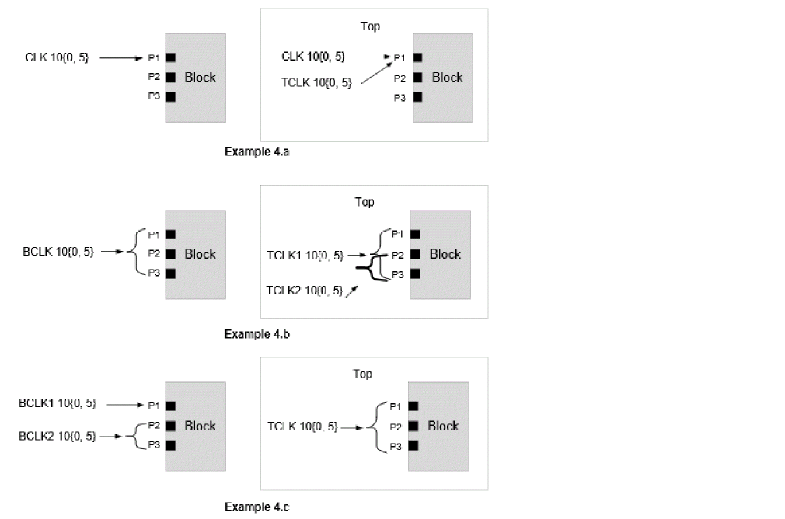
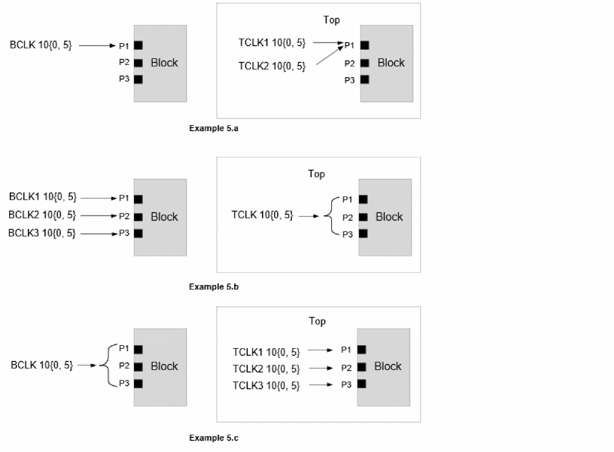
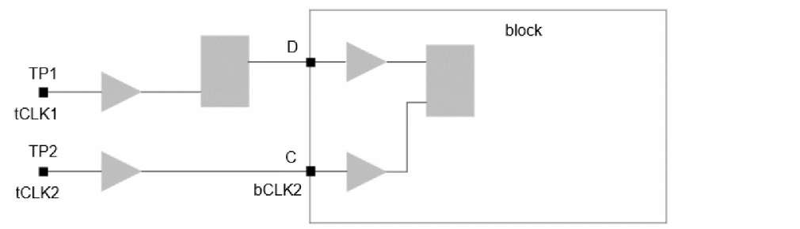
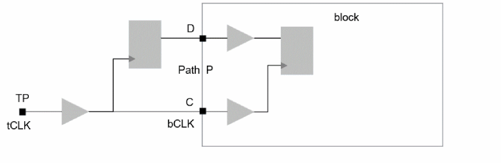

1-1 Clock Mapping Approach
When timing_context_port_based_clock_mapping is set to false:
The basic requirement for auto mapping is the presence of Block and Top STA clocks having consistent waveform at a block port. For example, as seen in the figure below, the top clock CLK will be automatically mapped with block clock CLK as both the clocks have the same properties and are present at the same port P1 in block and top STA.
If multiple clocks are present at a port or if a clock is present at multiple ports, then Tempus follows the below mentioned rules (mentioned in order of precedence) to determine the mapping:
- Rule1: Clocks with matching property (period/waveform)
- Rule2: Clocks with matching name
- Rule3: Clocks present on maximum number of common ports
- Rule4: Any one of the matching clocks
The following figures illustrate the various Top-Block clock design scenarios and Tempus auto clock mapping behavior:
- Example 1: Single clock at single block port
- Example 2: Multiple clocks at single block port
- Example 3: Single clock at multiple block ports
- Example 4: Clock mapping approach in case of multiple mapping candidates I (Rule 2 and Rule 3)
- Example 5: Clock mapping approach in case of multiple mapping candidates II (Rule 4)
Example 1: Single clock at single block port

- Block clock BCLK has same properties (Period is 10units, rise edge is 0 and fall edge is 5units) as the top clock phase TCLK. Hence, BCLK is mapped with TCLK even though their names are different.
- BCLK clock phase will propagate through port P1 in block context analysis.
- Top and block STA clocks CLK have the same name but different properties. The block clock period is 10units and top clock period is 20units. Hence, both the top and block CLK remains unmapped.
- Unmapped block clock CLK will be dropped from context analysis.
- TCLK clock phase enters block port P1 in top STA but no clock is defined on P1 in block STA. Hence, TCLK remains unmapped.
- Unmapped top clock TCLK will be dropped from analysis. So, no clock phase propagates through block port P1 in block context analysis.
- BCLK is defined at port P1 in block STA but no clock phase enters this port in top STA. Hence, BCLK remains unmapped.
- Unmapped block clock BCLK will be dropped from analysis. So, no clock phase propagates through block port P1 in block context analysis.
Example 2: Multiple clocks at single block port

- Top level clock TCLK1 will be mapped with block level clock BCLK as they have the same waveform.
- Top level TCLK2 will be unmapped as there is no equivalent clock in block STA. The unmapped clock TCLK2 will be dropped from analysis.
- Top level clock TCLK will be mapped with block level clock BCLK1 as they have the same waveform.
- Block level clock BCLK2 will be unmapped as there is no equivalent clock in Top STA. Only BCLK1 phase will propagate from port P1 in context analysis.
Example 3: Single clock at multiple block ports

- Block clock BCLK and top clock TCLK have the same properties and they are present at the same set of ports - P1, P2, and P3. Hence, the BCLK is mapped to TCLK and BCLK phase propagates through P1, P2 and P3 ports.
- Top level latency of TCLK from its source to Block/P1, Block/P2 and Block/P3 will be asserted on BCLK clock for port P1, P2 and P3 respectively.
- BCLK is mapped to TCLK and BCLK clock phase propagates through P1, P2 and P3 ports (even though BCLK is defined on P1 and P2 ports only).
- Top level latency of TCLK from its source to Block/P1, Block/P2 and Block/P3 will be asserted on BCLK clock for port P1, P2, and P3, respectively.
- BCLK is mapped to TCLK and BCLK phase propagates through P1 and P2 ports only.
- No clock phase will propagate through P3 port.
- Top level latency of TCLK from its source to Block/P1 and Block/P2 will be asserted on BCLK clock for port P1 and P2 respectively.
In the above cases, Tempus determines the clock mapping as per Rule1 of auto clock mapping.
Example 4: Clock mapping approach in case of multiple mapping candidates I (Rule 2 and Rule 3)
If multiple top (or block) clocks qualify Rule1 to map to block clock, then Tempus applies Rules 2, 3, and 4 (in precedence order) to determine a unique mapped clock pair. The figure below covers such cases.

- Two top level clocks CLK and TCLK satisfy Rule1 (property-based mapping) of clock mapping and are candidates for mapping with Block clock BCLK.
- Since Rule1 cannot determine the mapping, Rule2 (name-based mapping) is checked. Top clock CLK satisfies the Rule2 and hence gets mapped with block CLK.
- Top clock TCLK remains unmapped and dropped from analysis.
- Both the top level clocks TCLK1 and TCLK2 are candidates to get mapped with block clock BCLK. The rules 1 and 2 cannot identify the top clock that should be mapped with the block clock.
- Hence as per rule 3, TCLK1 gets mapped to BCLK - out of TCLK1 and TCLK2, TCLK1 has higher number of common ports with the block clock BCLK.
- TCLK2 remains unmapped and is dropped from analysis.
- Both block clocks BCLK1 and BCLK2 are candidates to get mapped with top clock TCLK. The rules 1 and 2 cannot identify the block clock that should be mapped with the top clock.
- Hence as per Rule3, BCLK2 gets mapped to TCLK - out of BCLK1 and BCLK2, BCLK2 has a higher number of common ports with the top clock TCLK.
- BCLK1 remains unmapped and is dropped from analysis.
Example 5: Clock mapping approach in case of multiple mapping candidates II (Rule 4)

- Both top level clocks TCKL1 and TCLK2 are candidates to get mapped with block clock BCLK. Rule1, 2, and 3 cannot identify the top clock that should be mapped with the block clock.
- Hence, any one of TCLK1 and TCLK2 will be selected for mapping with BCLK. This selection is deterministic.
- All the top and block level clocks have same properties, different names, and the same number of common ports between the block and top. Hence, rules 1, 2, and 3 cannot identify the top clock that should be mapped with the block clock.
- Hence, any one of the block clocks will be deterministically selected for mapping with TCLK. The remaining two block clocks will be unmapped.
All the block and top level clocks have same properties, different names, and the same number of common ports between the block and top. Hence, rules 1, 2, and 3 cannot identify the top clock that should be mapped with the block clock.
Hence, any one of the top clocks will be deterministically selected for mapping with BCLK. The remaining two top clocks will be unmapped.
Data Phase Clock Mapping
Any top level clock (real or virtual) which enters the block only as data signal is attempted to map with block virtual clocks as per the below mentioned priority:
- User-specified clock mapping: Such top level clocks will always be mapped with block virtual clocks.
- Clocks with same name and period/duty cycle: Such top level clocks are mapped with block virtual clocks having same name and waveform.
-
Mapping based on block
set_input_delay/set_output_delayconstraints.
Tempus first checks the presence of data signal with respect to the top level clocks on block ports and identifies the block virtual clocks having set_input_delay/set_output_delay on the corresponding ports. Then auto-clock mapping rules (See Types of Clock Mapping) are applied on these clocks to identify the mapped clocks.

create_clock -period 10 -name tCLK1 -waveform {0 5} [get_ports TP1]
create_clock -period 10 -name tCLK2 -waveform {0 5} [get_ports TP2]
create_clock -period 10 -name bCLK2 -waveform {0 5} [get_ports C]
create_clock -period 10 -name vCLK1 -waveform {0 5}
set_input_delay -clock vCLK1 2 [get_ports D]
- Top clock tCLK2 enters the port C as clock signal. The block SDC has bCLK2 on this port and properties of bCLK2 match with tCLK2, hence these are mapped.
- Top clock tCLK1 enters the port D as data signal. The block SDC has SID with respect to the virtual clock vCLK1 and properties of these two clocks match, hence these are mapped.
Example 2 - Data Phase Clock Mapping

create_clock -period 10 -name tCLK -waveform {0 5} [get_ports TP]
create_clock -period 10 -name bCLK -waveform {0 5} [get_ports C]
create_clock -period 10 -name vCLK -waveform {0 5}
set_input_delay -clock vCLK 2 [get_ports D]
- Clock tCLK at port C mapped to bCLK.
- Data signal of tCLK at port D is also mapped to bCLK, since these are mapped clocks.
- Path P will be analyzed with tCLK clock and data arrival.
- vCLK will remain unmapped.
Generated Clock Mapping
During context reading, generated clock waveforms are not available (since timing update is not done). Hence, block-level generated clocks are mapped with top level clocks based on their names only - without any waveform check. Hence, you must review the block vs top level waveforms of such clocks after timing update.
Clock Mapping Reports
Tempus automatically creates the following output files while reading the Timing Context:
These files honor auto_file_dir and auto_file_prefix attributes.
You must review the content of timing_context_clock_mapping.rpt file before proceeding with context analysis. This report file has the following four sections:
Section 1: Unmapped Top level clocks
This section reports the top-level clocks which could not be mapped with any block level clock. It also has the diagnostic message for possible reason of unsuccessful mapping
The table below indicates that the top-level clock CLK1 could not be mapped with any block level clock as there is no block level clock defined on block port P1 having waveform same as top level CLK1 clock.
Info: Top clocks NOT mapped to any block clocks: <TA-1023.
---------------------------------------------------------------------------------
Top Clock Period Rise Fall Usage View Mapping Result
Block Ports
---------------------------------------------------------------------------------
CLK1 4.000 0.000 1.000 {C I 0} view1 No possible match by parameter/name P1
CLK2 100.000 0.000 50.000 {I} view1 No possible match by parameter/name P2
---------------------------------------------------------------------------------
Usage Columns indicates the association of top-level clock with block. Possible Entries are:
- C -Top level clock phase
- I -Top level data phase on input ports
- O -Top level required time on output ports
- E -Top level exception on block input/output ports.
Section 2: Successfully mapped Top-Block Clocks
This section reports the top level clocks and the corresponding mapped block level clocks. It also prints the usage of top level clock at block level, indicating whether clock enters as clock/Data phase/Exception etc.
For example, the below output indicates that the top level clock TCLK is mapped with block level clock BCLK. Usage {C} indicates that the TCLK enters the block as clock phase.
Info: Top clocks successfully mapped to block clocks: <TA-1022>.
---------------------------------------------------------------------------------
Top Clock Period Rise Fall Usage Block Clock View Type
---------------------------------------------------------------------------------
TCLK 40.000 0.000 20.000 {C} BCLK view1 auto
---------------------------------------------------------------------------------
Section 3: Block level unmapped port clocks
This section reports the block level port clocks which could not be mapped with any top-level clock.
Info: Block input port clocks NOT mapped to any top clocks: <TA-1025>.
---------------------------------------------------------------------------------
Block Clock Period Rise Fall View
---------------------------------------------------------------------------------
BCLK1 10.000 0.000 5.000 view1
BCLK0 10.000 0.000 5.000 view1
---------------------------------------------------------------------------------
Section 4: Block level unmapped virtual clocks
This section reports the block level virtual clocks which could not be mapped with any top-level clock.
Info: Virtual block clocks NOT mapped to any top clocks: <TA-1041>.
---------------------------------------------------------------------------------
Block Clock Period Rise Fall View
---------------------------------------------------------------------------------
VCLK2_VIRT 3.600 0.000 1.100 view1
---------------------------------------------------------------------------------
Return to top